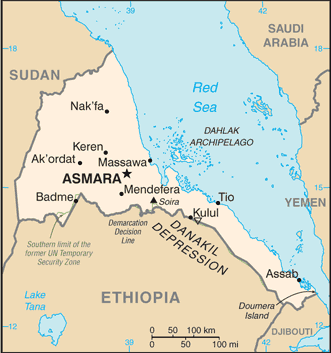
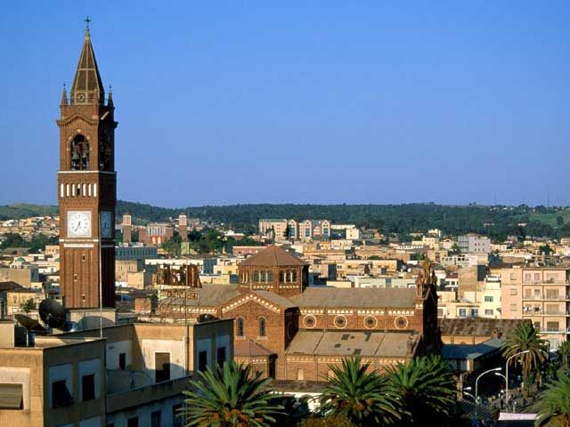
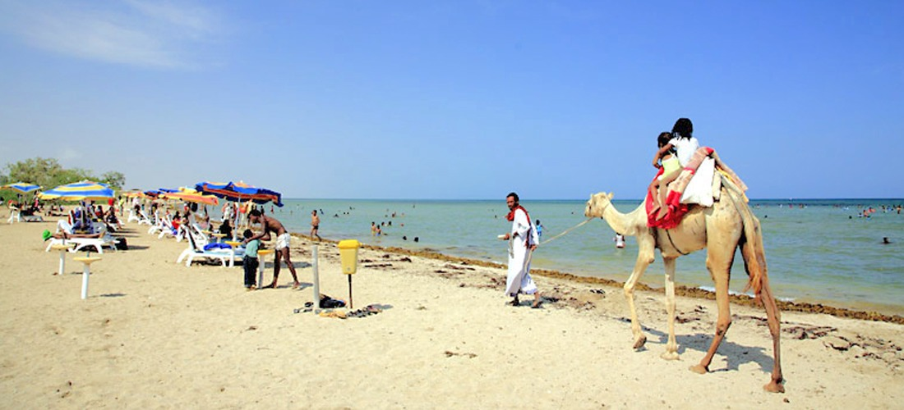

History of Eritrea

Eritrea is located in East Africa, in the Horn of Africa. Its neighbouring countries include Djibouti, Sudan and Ethiopia.
It is home to 9 tribes which include:
- Tigrinya
- Bilen
- Tigre
- Afar
- Hidareb
- Kunama
- Nara
- Saho
- Rashida
The main languages spoken in Eritrea (in order) are Tigrinya, Tigre, Kunama, Bilen, Nara, Saho, Afar and Beja.


Asmara, the capital of Eritrea, was given UNESCO World Heritage status in 2017 due to its 'exceptional example of early modernist urbanism at the beginning of the 20th century'.
Massawa, a city on the coast is very serene and a nice getaway from the busy hustle of the urban cities. Although Massawa is very hot (highest recorded temperature of 46°C!), being able to go swimming in the Red Sea is worth it! Fun fact- due to the high saline concentration in the Red Sea you are able to easily float on the surface of the water!